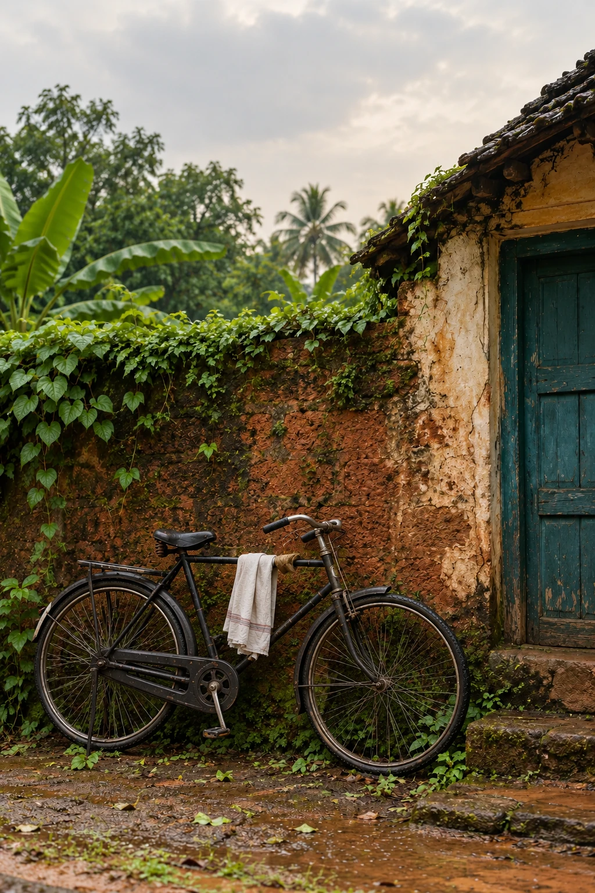

 Kabita Live
Kabita Live
Issue 22
August 2024
Browse poemsSomeone will be back
The bicycle leans against the wall with the ease of a familiar visitor. Its front wheel is still turned towards the lane. Someone has gone inside for water, a conversation, a few minutes longer than intended. The image keeps their place without needing to show their face.
Cultural connection
A bicycle and a lived-in wall suggest everyday mobility and neighbourhood life, without turning poverty or age into decoration.
Reader tools
Language
Text size
Choose a language for the titles and the poems you open.
କିଛି ଅମାନିଆ ପୁଅଙ୍କ ପାଇଁ
स्मृति
मेरी खिड़की के बाहर की दुनिया
 Original: Hindi
Original: HindiWaves
 Original: English
Original: English